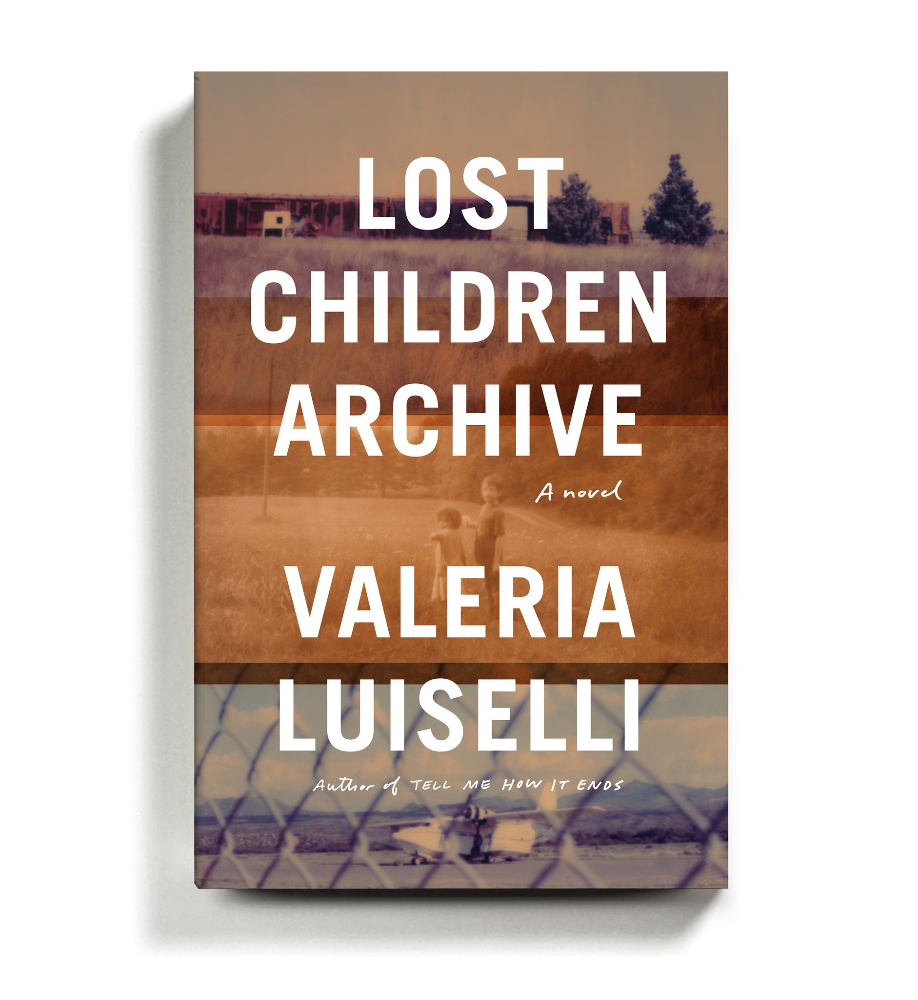
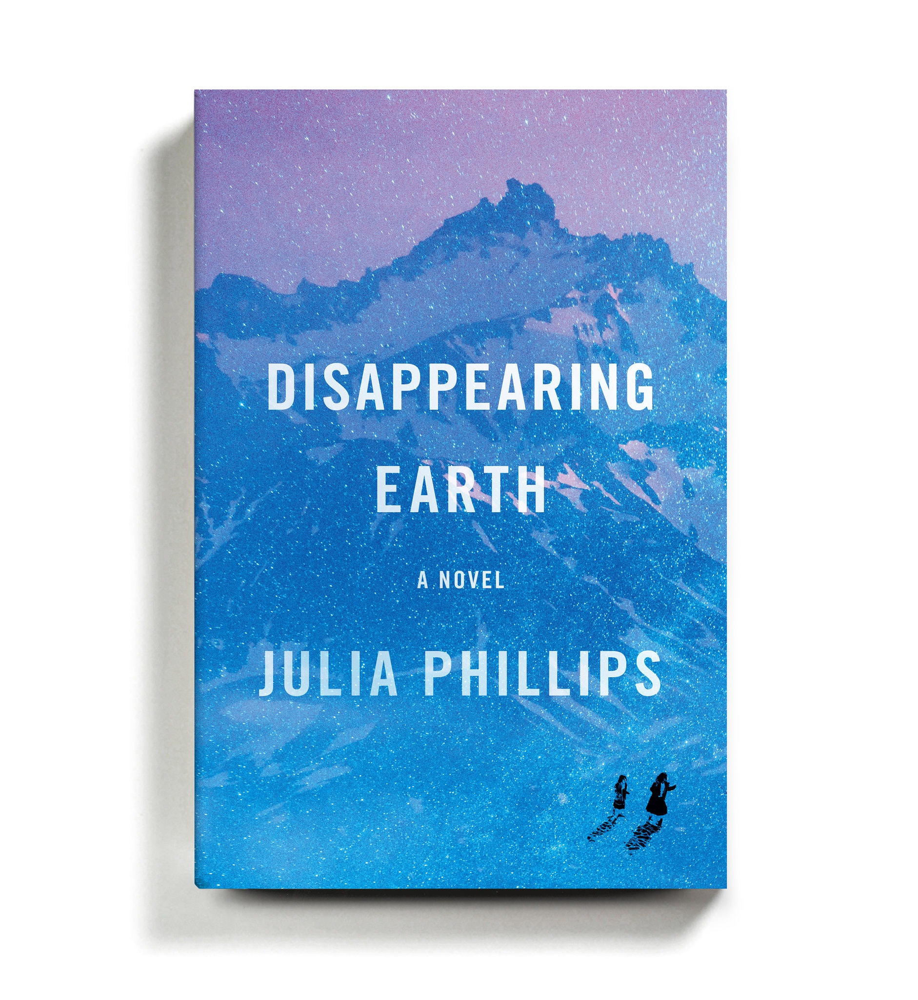
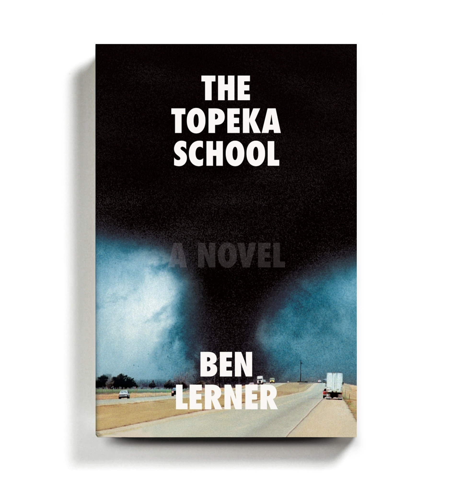
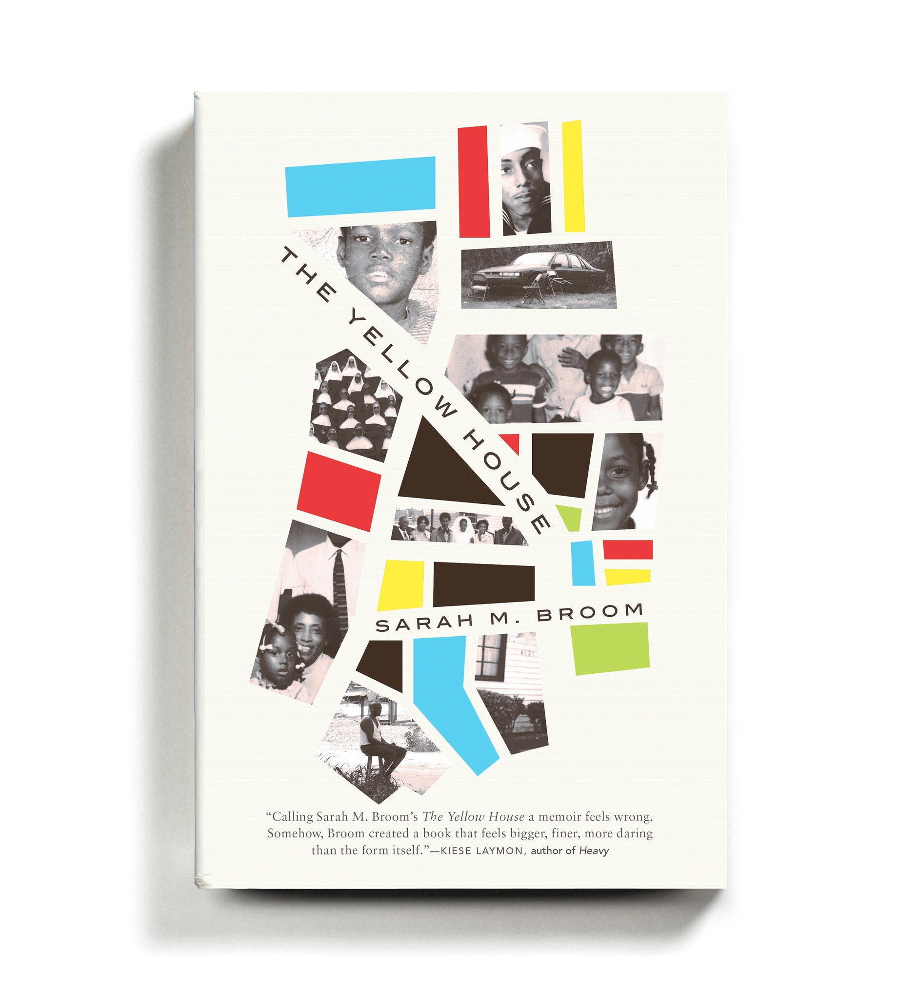

CSS Template
BOOK REVIEWS
Welcome!
Please have a look at the amazing Reviews.You are surely at the right place.
Various book reviews available here.Select now!
Lost Children Archive-The Mexican author’s third novel — her first to be written in English — unfolds against a backdrop of crisis: of children crossing borders, facing death, being detained, being deported unaccompanied by their guardians. The novel centers on a couple and their two children (all unnamed), who are taking a road trip from New York City to the Mexican border; the couple’s marriage is on the brink of collapse as they pursue independent ethnographic research projects and the woman tries to help a Mexican immigrant find her daughters, who’ve gone missing in their attempt to cross the border behind her. The brilliance of Luiselli’s writing stirs rage and pity, but what might one do after reading such a novel? Acutely sensitive to these misgivings, Luiselli has delivered a madly allusive, self-reflexive, experimental book, one that is as much about storytellers and storytelling as it is about lost children.
Disappearing Earth-In the first chapter of this assured debut novel, two young girls vanish, sending shock waves through a town perched on the edge of the remote, brooding Kamchatka Peninsula. What follows is a novel of overlapping short stories about the various women who have been affected by their disappearance. Each richly textured tale pushes the narrative forward another month and exposes the ways in which the women of Kamchatka have been shattered — personally, culturally and emotionally — by the crime.
The Topeka School-Lerner’s exhilarating third novel, after “Leaving the Atocha Station” and “10:04,” rocks an emphatically American amplitude, ranging freely from parenthood to childhood, from toxic masculinity to the niceties of cunnilingus, from Freud’s Oedipus complex to Tupac’s “All Eyez on Me.” Adam Gordon returns as the protagonist, but this time as a high school debate star, and mostly in the third person. Equal portions of the book are given over to the voices of his psychologist parents, and to a former classmate whose cognitive deficits are the inverse of Adam’s gifts. The earlier novels’ questions about art and authenticity persist; but Adam’s faithlessness is now stretched into a symptom of a national crisis of belief. Lerner’s own arsenal has always included a composer’s feel for orchestration, a ventriloquist’s vocal range and a fine ethnographic attunement. Never before, though, has the latter been so joyously indulged, or the bubblicious texture of late Clintonism been so lovingly evoked.
The Yellow House-In her extraordinary, engrossing debut, Broom pushes past the baseline expectations of memoir to create an entertaining and inventive amalgamation of literary forms. Part oral history, part urban history, part celebration of a bygone way of life, “The Yellow House” is a full indictment of the greed, discrimination, indifference and poor city planning that led her family’s home to be wiped off the map. Tracing the history of a single home in New Orleans East (an area “50 times the size of the French Quarter,” yet nowhere to be found on most tourist maps, comprising scraps of real estate whites have passed over), from the ’60s to Hurricane Katrina, this is an instantly essential text, examining the past, present and possible future of the city of New Orleans, and of America writ large.